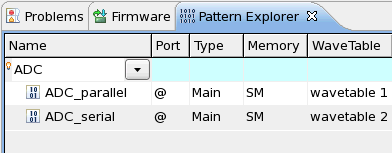

Sorting and filtering the pattern table
When handling setups with a large number of patterns you can increase the clarity in the Pattern Explorer by sorting and filtering the pattern table.
Before you begin
The Pattern Explorer must be open (see Opening the Pattern Explorer), and must list several items.
Procedures
Sorting
To sort the pattern table:
- Click the table header field you want to sort by, for example Name. On the first click the order is ascending.
- Click the same field again and again. This changes the order to descending, then to none, and so on.
Note Multiple column sorting is not supported.
Filtering
To filter the pattern table:
- Double-click the turquoise field of the column you want to filter.
- Type the filtering condition. Regular expressions are supported. To activate the content
assist press Ctrl+Spacebar.
Examples:
If you type ADC in the name column, all patterns whose name contains the string ADC are displayed.
If you type ^g in the name column, all patterns whose name starts with g are displayed.
